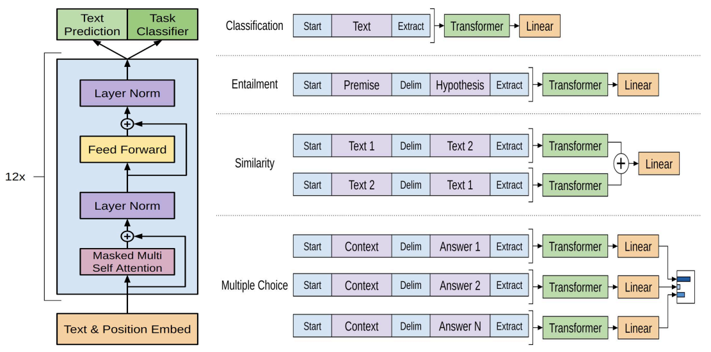
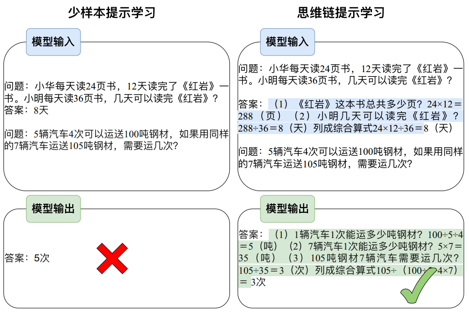

ChatGPT 相关核心算法
1.ChatGPT 相关核心算法
ChatGPT 的卓越表现得益于其背后多项核心算法的支持和配合。本文将分别介绍作为其实现基础的 Transformer 模型、激发出其所蕴含知识的Prompt/Instruction Tuning 算法、其涌现出的思维链能力、以及确保其与人类意图对齐的基于人类反馈的强化学习算法。
1.基于Transformer的预训练语言模型
ChatGPT 强大的基础模型采用 Transformer 架构， Transformer 是一种基于自注意力机制的深度神经网络模型，可以高效并行地处理序列数据。
原始的 Transformer 模型包含两个关键组件：编码器和解码器。编码器用于将输入序列映射到一组中间表示，解码器则将中间表示转换为目标序列。编码器和解码器都由多层的注意力模块和前馈神经网络模块组成。其中自注意力模块可以学习序列中不同位置之间的依赖关系，即在处理每个位置的信息时，模型会考虑序列中其他所有位置上的信息，这种机制使得 Transformer模型能够有效地处理长距离依赖关系。在原始 Transformer 模型基础上，相继衍生出了三类预训练语言模型：编码预训练语言模型、解码预训练语言模型和编解码预训练语言模型。
1.1 编码预训练语言模型（Encoder-only Pre-trained Models）
这类模型在预训练过程中只利用原始 Transformer 模型中的编码器。相应的预训练任务通常选用掩码语言建模任务（Masked Language Modeling）， 即掩码住（用特殊字符 [MASK] 替换）输入句子中一定比例的单词后，要求模型根据上下文信息去预测被遮掩的单词。其中有有代表性的工作包括 BERT， ALBERT， RoBERTa 等。
- BERT：BERT 模型是最经典的编码预训练语言模型，其通过掩码语言建模和下一句预测任务，对 Transformer 模型的参数进行预训练。
- ALBERT：ALBERT 是一个轻量化的 BERT 模型，通过分解词向量矩阵和共享 Transformer 层参数来减少模型参数个数。
- RoBERTa：相较于 BERT 模型， RoBERTa 在预训练阶段，采用了更多的语料以及动态掩码机制（不同轮次同一样本掩码不同的单词），去掉了下一 句预测任务，同时采用了更大的批大小。
1.2 解码预训练语言模型（Decoder-only Pre-trained Models）
GPT (Generative Pre-trained Transformer) 是由 OpenAI 提出的只有解码器的预训练模型。相较于之前的模型，不再需要对于每个任务采取不同的模型架构，而是用一个取得了优异泛化能力的模型，去针对性地对下游任务进行微调。在本章节将介绍 GPT 系列模型，包括 GPT-1、 GPT-2 和 GPT-3。
（1）GPT-1
GPT-1 在文章“Improving Language Understanding by Generative PreTraining”[1] 中被提出。在 GPT 被提出之前，大多数深度学习方法都需要大量人工标注的高质量数据，但是标注数据的代价是巨大的，这极大程度上限制了模型在各项任务性能的上限。如何利用容易获取的大规模无标注数据来为模型的训练提供指导成为 GPT-1 中需要解决的第一个问题。另外自然语言处理领域中有许多任务依赖于自然语言在隐含空间中的表征，不同任务对应的表征很可能是不同的，这使得根据一种任务数据学习到的模型很难泛化到其他任务上。因此如何将从大规模无标注数据上学习到的表征应用到不同的下游任务成为 GPT-1 需要解决的第二个问题。
针对第一个问题， GPT-1 中使用了自左到右生成式的目标函数对模型进行预训练。这个目标函数可以简单理解为给定前 $i - 1$ 个 token，对第 $i$ 个 token 进行预测。基于这样的目标函数， GPT-1 就可以利用无标注的自然语言数据进行训练，学习到更深层次的语法信息与语义信息。
针对第二个问题，在完成了无监督的预训练之后， GPT-1 接着使用了有标注的数据进行有监督的微调使得模型能够更好地适应下游任务。给定输入token 序列$x1, x2, …, xm$ 与标签 y 的数据集，对模型的参数进行再次训练调 整，用到的优化模型是在给定输入序列时预测的标签最接近真实值
具体来说， GPT-1 在大规模无标注语料库上预训练之后，再利用有标注数据在特定的目标任务上对模型参数进行微调，实现了将预训练中获得的知识迁移到下游任务。
GPT-1 的结构很简单，由 12 层 Transformer Block（自注意力模块和前馈神经网络模块）叠加而成。下图是 GPT-1 原文中的总览图，左侧是 GPT-1 的架构以及训练时的目标函数；右侧是对于不同任务上进行微调时模型输入与输出的改变。

（2）GPT-2
与 GPT-1 中的通过预训练-微调范式来解决多个下游任务不同， GPT- 2 更加侧重于 Zero-shot 设定下语言模型的能力。 Zero-shot 是指模型在下游任务中不进行任何训练或微调，即模型不再根据下游任务的数据进行参数上的优化，而是根据给定的指令自行理解并完成任务。
简单来讲， GPT-2 并没有对 GPT-1 的模型架构进行创新，而是在 GPT- 1 的基础上引入任务相关信息作为输出预测的条件，将 GPT-1 中的条件概 率 $p(output|input)$ 变为 $p(output|input; task)$；并继续增大训练的数据规模以及模型本身的参数量，最终在 Zero-shot 的设置下对多个任务都展示了巨大的潜力。
虽然 GPT-2 并没有模型架构上的改变，但是其将任务作为输出预测的条件引入模型从而在 Zero-shot 的设置下实现多个任务的想法一直延续至今。这样的思想事实上是在传达只要模型足够大，学到的知识足够多，任何有监督任务都可以通过无监督的方式来完成，即任何任务都可以视作生成任务。
（3）GPT-3
GPT-3使用了与 GPT-2 相同的模型和架构。文中为了探索模型规模 对于性能的影响，一共训练了 8 个不同大小的模型，并将最大的具有 1750 亿参数的模型称为 GPT-3。
GPT-3 最显著的特点就是大。大体现在两方面，一方面是模型本身规模大，参数量众多，具有 96 层 Transformer Decoder Layer，每一层有 96 个 128 维的注意力头，单词嵌入的维度也达到了 12,288；另一方面是训练过程中使用到的数据集规模大，达到了 45TB。在这样的模型规模与数据量 的情况下， GPT-3 在多个任务上均展现出了非常优异的性能，延续 GPT-2 将无监督模型应用到有监督任务的思想， GPT-3 在 Few-shot， One-shot 和 Zero-shot 等设置下的任务表现都得到了显著的提升。
1.3 基于编解码架构的预训练语言模型（Encoder-decoder Pretrained Models）
基于编码器的架构得益于双向编码的全局可见性，在语言理解的相关任务上性能卓越，但是因为无法进行可变长度的生成，不能应用于生成任务。
基于解码器的架构采用单向自回归模式，可以完成生成任务，但是信息只能从左到右单向流动，模型只知“上文”而不知“下文”，缺乏双向交互。针对 以上问题，一些模型采用序列到序列的架构来融合两种结构，使用编码器提取出输入中有用的表示，来辅助并约束解码器的生成。
- BART：BART 的具体结构为一个双向的编码器拼接一个单向的自回归解码器，采用的预训练方式为输入含有各种噪声的文本，再由模型进行去噪重构。在解码器部分， BART 每一层对编码器的最后一层的隐藏表示执行交叉注意力机制以聚合关键信息。 BART 在维基百科和 BookCorpus 数据集上训练，数据量达 160GB。
- T5：BART 为了兼顾不同任务设计了复杂的预训练任务，针对如何在多个任务中实现优秀的迁移性能这一问题，谷歌研究者提出了一种新的范式：将所有自然语言处理任务统一成“文本到文本”的生成任务。 T5 通过在输入之前加入提示词，实现了用单个模型解决机器翻译、文本摘要、问答和分类等多个任务。针对迁移学习需要的巨量、高质量和多样的预训练数据， T5 在谷歌专门构造的 C4 数据集上进行训练。
- Switch Transformers：随着语言模型的深入研究，参数量的增加可以显著提高模型的性能，但随之而来的就是应用时越来越大的运算量。 SwicthTransformer 将混合专家网络（Mixture-of-Experts， MoE）的条件运算思想引入 Transformer 的全连接层，实现增加模型的尺寸而不增加推理时的运算量。
2.提示学习与指令精调
2.1 提示学习概述
提示学习（Prompt Learning） 简单来说是通过一些方法编辑下游任务的输入，使其形式上模拟模型预训练过程使用的数据与任务。比如做情感分类任务时，监督学习的做法是输入“我今天考砸了”，模型输出分类的分数或分布，而提示学习的做法则是在“我今天考砸了”后拼接上自然语言描述“我感觉很 ____”，让模型生成后面的内容，再根据某种映射函数，将生成内容匹配到某一分类标签。
可以看出，提示学习这种方式拉近了测试分布与预训练分布的距离，进而可以利用大规模预训练语言模型在预训练过程中习得的强大语言建模能力，使其不经过微调就可以在各种下游任务上取得很好的结果。后续更有工作提出了自动提示搜索和连续提示的方法，使得提示本身也可以微调，使其 有了更好的灵活性。
相较于提示学习， 指令精调（Instruction Tuning） 可以说是提示学习的加强版。两种学习方法的本质目标均是希望通过编辑输入来深挖模型自身所蕴含的潜在知识，进而更好的完成下游任务。
而与提示学习不同的是，指令学习不再满足于模仿预训练数据的分布，而是希望通过构造“指令 （Instruction）”并微调的方式，学习人类交互模式的分布，使模型更好的理解人类意图，与人类行为对齐；在指令学习中，模型需要面对的不再是单纯的补全任务，而是各种不同任务的“指令”，即任务要求。模型需要根据不同的任务要求，做出相匹配的正确回复。“指令”举例如下：
- 请将下面这句话翻译成英文“ChatGPT 都用到了哪些核心技术？”
- 请帮我把下面这句话进行中文分词“我太喜欢 ChatGPT 了!”
- 请帮我写一首描绘春天的诗词，诗词中要有鸟、花、草。
从样例中可以看出，原本自然语言处理中的经典任务，经过任务要求的包装后，就变成了更符合人类习惯的“指令”。
研究表明，当“指令”任务的种类达到一定量级后，大模型甚至可以在没有见过的零样本（Zero-shot） 任务上有较好的处理能力。因此，指令学习可以帮助语言模型训练更深层 次的语言理解能力，以及处理各种不同任务的零样本学习能力。 OpenAI 提出的 InstructGPT 模型使用的就是指令学习的思想， ChatGPT 沿袭了InstructGPT 的方法。
2.2 ChatGPT中的指令学习
ChatGPT 所用到的指令学习数据集的构造方法和训练方法与 InstructGPT 大致相同，因此介绍 InstructGPT 构造“指令”数据集的细节。
InstructGPT 的“指令”数据集由两部分构成，其中一部分收集于全球用户使用 OpenAI 的 API 后的真实人机交互数据，这些数据在使用之前都经过了信息去重和敏感信息过滤；另一部分数据则来自于人工标注。
为了使标注人员能够标注出高质量的数据集， OpenAI 通过前期的审核和面试，聘请了一个由 40 人组成的标注团队。在这些人工标注的数据中，总共分为三类，其一是为了增加数据集中任务的多样性，由标注人员写出任意任务的 “指令”；其二是小样本（Few-shot）数据，由标注人员写出“指令”和一些对应的问答对，用于训练模型的小样本学习（Few-shot learning）能力；其三 是在 OpenAI API 中已有的用例，标注人员模仿这些用例写出相类似的“指令”数据。这些数据包含了语言模型中常见的任务类型（生成、问答、聊天、改写、总结、分类等），其中 45.6% 的“指令”为生成任务类型，在所有类型中占比最大。
InstructGPT 通过在构造的”指令”数据集上进行有监督微调（Supervised fne-tuning, SFT）和基于人工反馈的强化学习（Reinforcement Learning from Human Feedback, RLHF）以使模型与人类需求对齐。
在实验结果上，将运用指令学习后且含有 175B 参数的 InstructGPT 模 型，在指令学习的经典数据集 FLAN、 T0 上进行精调后发现， InstructGPT 模型对比 FLAN、 T0 两个模型在效果上均有一定程度的提升。
3.思维链（Chain of Thought， COT）
人类在解决数学应用题这类复杂推理任务的过程中，通常会将问题分解为多个中间步骤，并逐步求解，进而给出最终的答案，例如求解问题“小华每天读 24 页书， 12 天读完了《红岩》一书，小明每天读 36 页书，几天可以读完《红岩》？”，人会将问题分解为（1）“红岩共 24*12=288（页）”、（2）“小明可以用 288÷36=8(天)”。受此启发，谷歌研究人员 Jason Wei（现 OpenAI 员工）等提出了思维链，通过在小样本提示学习的示例中插入一系列中间推理步骤，有效提升了大规模语言模型的推理能力，图中展示模型通过产生思维链来正确求解数学应用题。

相较于一般的小样本提示学习，思维链提示学习有几个吸引人的性质：
- 在思维链的加持下，模型可以将需要进行多步推理的问题分解为一系列的中间步骤，这可以将额外的计算资源分配到需要推理的问题上。
- 思维链为模型的推理行为提供了一个可解释的窗口，使通过调试推理路径来探测黑盒语言模型成为了可能。
- 思维链推理应用广泛，不仅可以用于数学应用题求解、常识推理和符号操作等任务，而且可能适用任何需要通过语言解决的问题。
- 思维链使用方式非常简单，可以非常容易地融入语境学习（in-context learning），从而诱导大语言模型展现出推理能力。
4.基于人类反馈的强化学习（Reinforcement Learning with Human Feedback， RLHF）
RLHF 是 ChatGPT/InstrcutGPT 实现与人类意图对齐，即按照人类指令尽可能生成无负面影响结果的重要技术。该算法在强化学习框架下实现，大体可分为以下两个阶段：
（1）奖励模型训练
该阶段旨在获取拟合人类偏好的奖励模型。奖励模型以提示和回复作为输入，计算标量奖励值作为输出。奖励模型的训练过程通过拟合人类对于不同回复的倾向性实现。具体而言，首先基于在人类撰写数据上精调的模型，针对同一提示采样多条不同回复。然后，将回复两两组合构成一条奖励模型训练样本，由人类给出倾向性标签。最终，奖励模型通过每条样本中两个回复的奖励值之差计算倾向性概率拟合人类标签，进而完成奖励模型的训练。
（2）生成策略优化
给定习得的奖励模型， ChatGPT/InstructGPT 的参数将被视为一种策略，在强化学习的框架下进行训练。首先，当前策略根据输入的查询采样回复。然后，奖励模型针对回复的质量计算奖励，反馈回当前策略用以更新。值得注意的是，为防止上述过程的过度优化，损失函数同时引入了词级别的 KL 惩罚项。此外，为了避免在公开 NLP 数据集上的性能退化，策略更新过程兼顾了预训练损失。